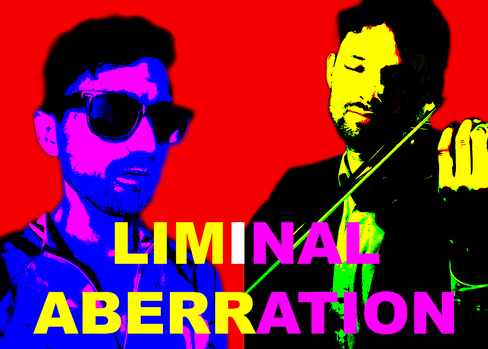

Jeff Stanek on keyboards. Aaron Yarmel on strings. Experimental fusion out of Madison, Wisconsin.
On a hot summer day in 2015, two Madison vegans crossed paths for the first time in the Hawthorne Library parking lot. They had come to protest against the now-infamous research puppy mill, Ridglan Farms, and they quickly discovered that they had another thing they were also both serious about: music.
Liminal Aberration is the mercurial duo project of Jeff Stanek on keyboards and Aaron Yarmel on strings. For this year's Madison Vegan Fest, they'll be presenting a new story-with-music that calls back to what first brought them together: their commitment to animal liberation. This mini-drama is inspired by the dogs who mean so much to us, and by the people who risk everything to secure their happiness, safety, and freedom. Come listen to the whole thing or just stop by as you please for nice tunes, spiffy sounds, and good vegan vibes.